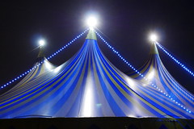

<div>
    <mat-card class="example-card">
        <mat-card-header>
            <div mat-card-avatar class="example-header-image"></div>
            <mat-card-title>El Circo</mat-card-title>
            <mat-card-subtitle>Seminarius</mat-card-subtitle>
        </mat-card-header>
        
        <mat-card-content>
            <p>
                Un circo es un espectáculo artístico, normalmente itinerante, que puede incluir a acróbatas, contorsionistas, equilibristas, escapistas, forzudos, hombres bala, magos, malabaristas, mimos, monociclistas, payasos, titiriteros, tragafuegos, tragasables,
                trapecistas, ventrílocuos, zanqueros y animales salvajes domesticados. Es presentado en el interior de una gran carpa que cuenta con pistas y galerías de asientos para el público. Las pistas de los circos suelen ser áreas circulares donde
                se presentan las funciones; por consiguiente, el circo de tres pistas es considerado más atractivo por la variedad de espectáculos que se disfrutan al mismo tiempo En la actualidad los circos ya no son como antes. Los animales están prohibidos
                en los circos.[cita requerida] Hoy en día las artes circenses no son únicas de las pistas del circo, sino que también son empleos y subempleos desempeñados en otros lugares, dígase en las avenidas de una ciudad En Argentina se dio una
                variante de este género artístico, denominada «circo criollo»; surgida surgida entre 1840 y 1866 en los alrededores de la ciudad de Buenos Aires, difundió principalmente el género gauchesco a través de danzas y canciones
            </p>
        </mat-card-content>

    </mat-card>
</div>